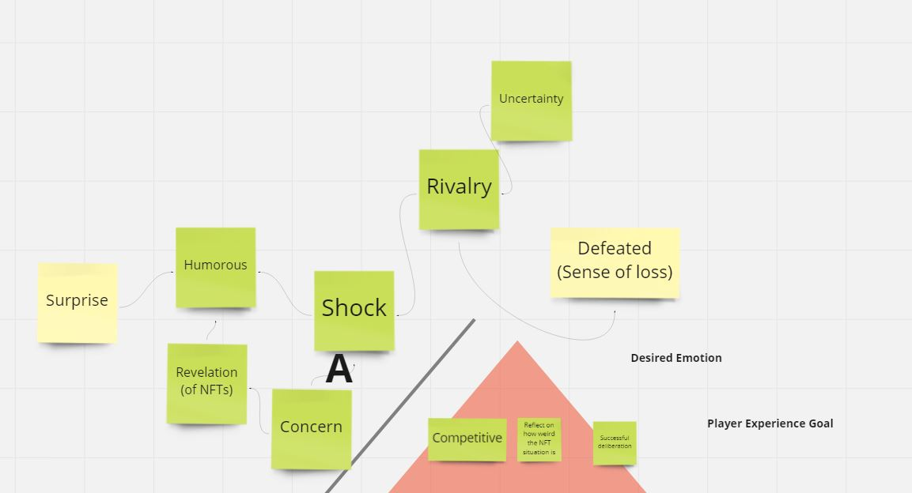
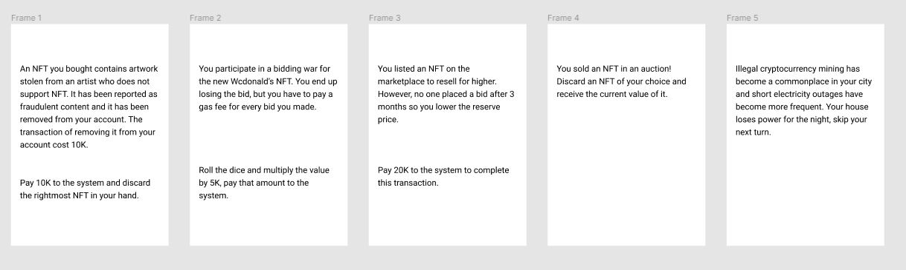
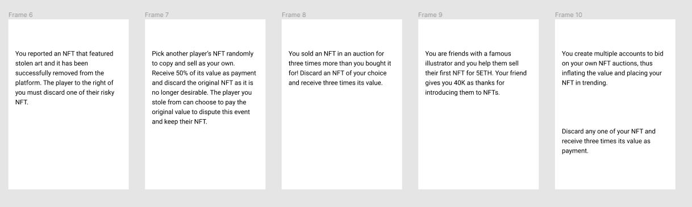
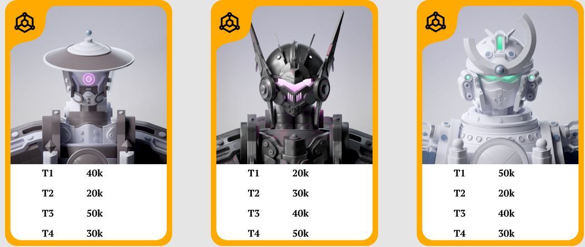

Once I Heard Someone got Rich by NFT’s goal was to be a board game that was designed to use transformative fun to raise awareness about NFTs (Non-Fungible Tokens). We were also required to include two other types of fun into the project, we chose to use hard fun with elements of strategy and easy fun with elements of roleplay. As a result of the pandemic, the class was told to use Tabletop Simulator as our means of prototyping.
It is a competitive board game in which players take turns rolling dice and moving around the board whilst purchasing and selling NFTs to try to make a profit.
All whilst trying to avoid the worst of the disaster effects that trigger when too many NFT transactions happen. The game ends when there are no more disaster events to trigger and the player with the most on hand cash wins.
My focus as a game designer was to find ways to take the information about NFTs from the research that we did and the desired emotional response we believed would suit the message of our game best to use gamification and turn those into dynamics, like conflicts and objectives.
I noted the idea of using the variability of NFT prices to create an objective for players to buy low and sell high, reflecting not only our research but also our desired emotion.
However, this built into a new issue that my group noted, our transformative fun was based around critiquing NFTs specifically by partaking in the transactions. This was similar to another board game, Monopoly, Monopoly’s original intention of critiquing capitalism. Yet, Monopoly’s original message has been lost to most players except the ones losing the game, so we became concerned of replicating the same issue that we dubbed “the Monopoly problem”.
It was a struggle for our group to think of a way to eliminate the issue in most cases. However, one of my group mates and I thought of a way to mitigate the chances by introducing more elements of chance into our game. The idea was to create event cards that had been based on reality and told events from the lens as if the game was actually happening.
From playtest feedback, this proved to be a big success for helping mitigate the problem as it helped players reflect more on their actions. On top of that, players also enjoyed the elements of roleplay as they felt more immersed with the game world from the event cards.
My role as playtest coordinator was to schedule extra playtests outside of the class time we had to do them and record them and get feedback for the group. I was able to get a lot of insight into what was letting players have fun with our game but also how some mechanics in the game weren’t providing dilemmas or interesting dynamics to our players.
Our game revolves around participating in NFT transactions but we wanted to add more elements of strategy into the game. So we created a mechanic based on NFT collections, where if the players collected all the NFT’s in a collection they could sell all of them for the highest value regardless of what the current price of the NFT is. Collections came in sets of three and our game had a total of ten collections.
However playertesters almost never got the opportunity to do that for two main reasons, the first being a lot of them were in debt and the second being it was almost impossible to have a situation where all five of the NFT cards were revealed on the board at the same time. Keep in mind that the game starts out with four NFT cards available to purchase and more are added throughout the game.
One of the playtester’s feedback had suggested the idea that instead of needing a full set, maybe the players only needed the majority. This was a good idea but wouldn’t work with the three card collection setup. However I was able to formulate the idea into a possible change for my group, by saying we cut the amount of collections we have in half but increase each collection’s maximum to five and require the players to only have the majority of the collection. This meant the mechanic was now able to be used as the likelihood of three NFT cards was a lot higher.
As a result, our NFT card prices had also been adjusted to allow for a bit more income and make players less likely to be forced into debt.
This project taught me a lot about the game design process and made me a lot more comfortable with making games that have different types of fun and designing using the MDA framework. It also helped me to learn how to break down playtester feedback into ways I could use to improve the overall design of the game.